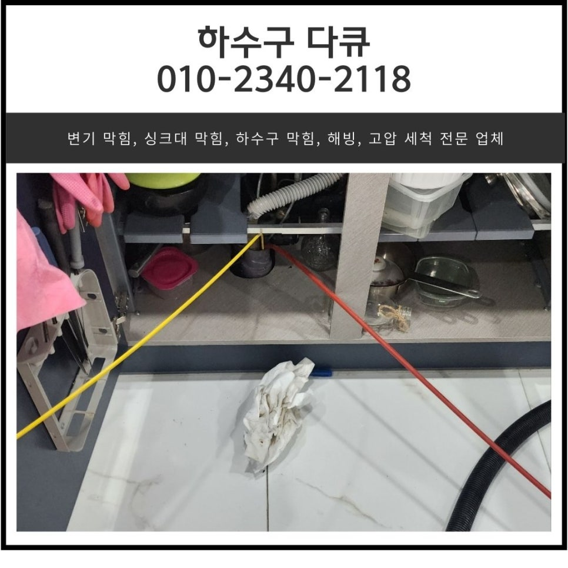
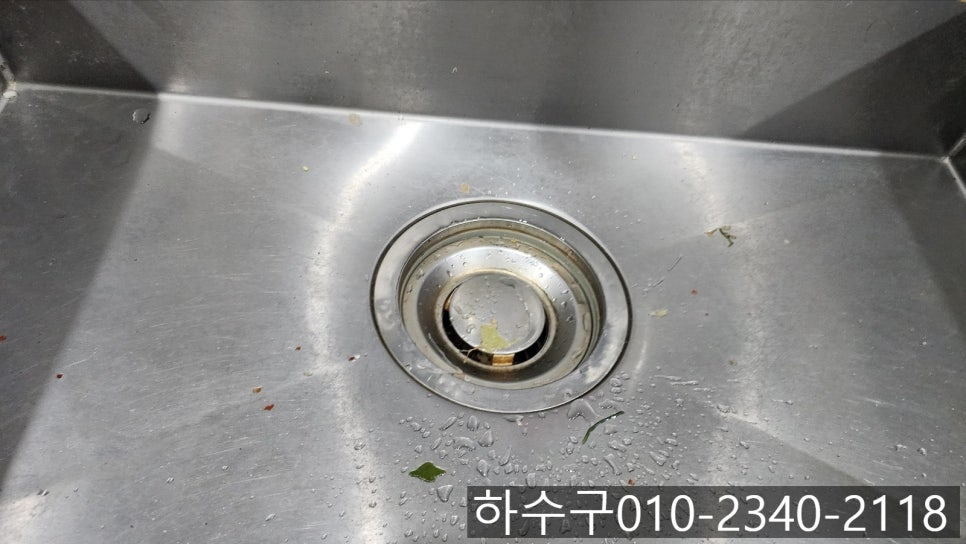
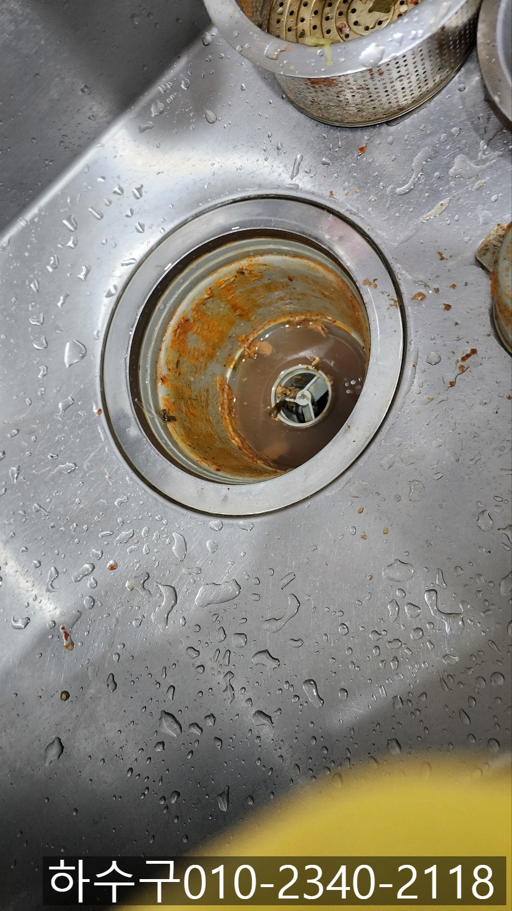
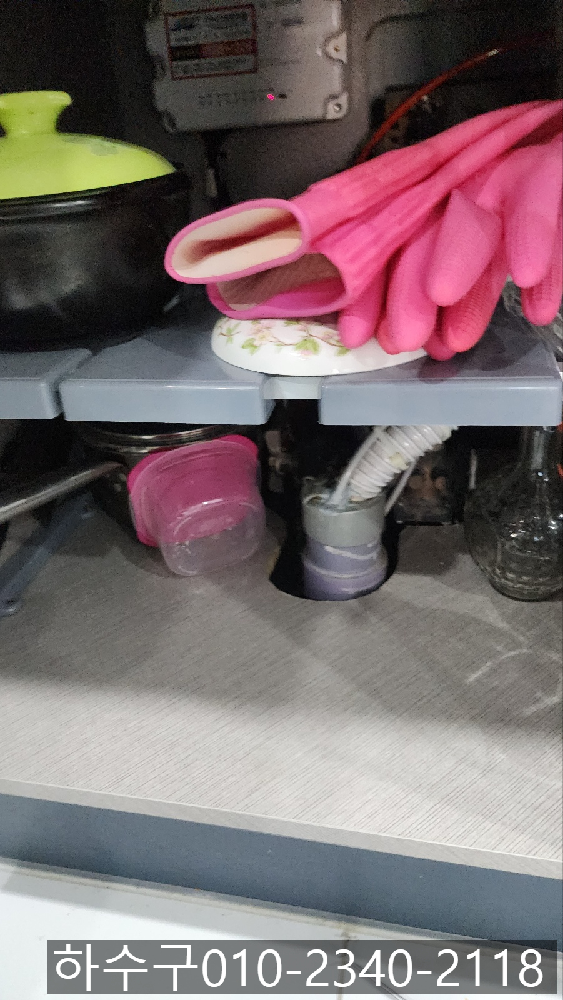
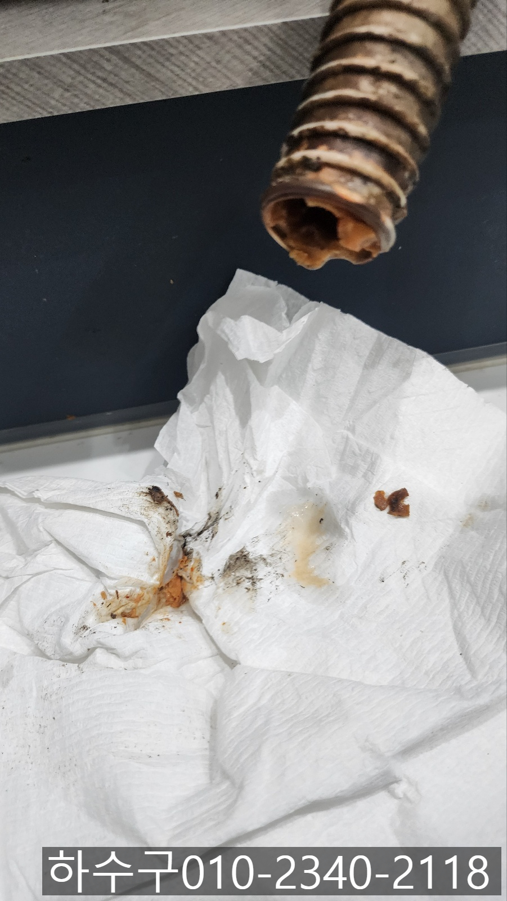
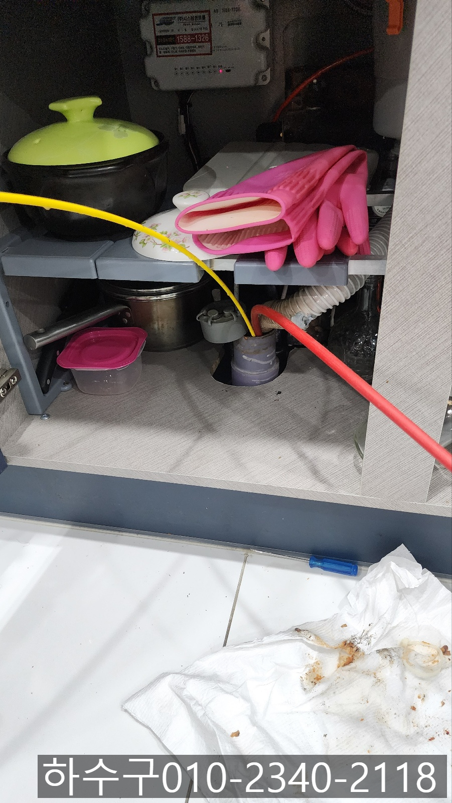
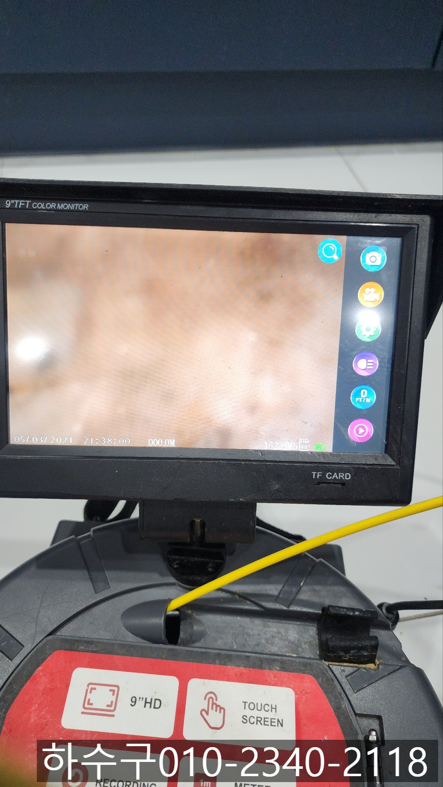

🏠 호계동 싱크대 역류 동안구 갈산동 하수구 배관 막힘 뚫는 방법
오산 호계동 싱크대막힘 전문 시공 후기

📋 작업 개요
- 위치: 오산 호계동, 호계동, 오산
- 서비스 유형: 싱크대막힘, 변기막힘, 하수구막힘, 배관막힘, 역류해결, 뚫는업체, 배관청소
- 작업 일시: 2024. 12. 1. 9:30
- 업체명: 하수구수사대 (010-5615-2118)
🔍 문제 상황
안녕하세요.
호계동 싱크대 역류, 동안구 갈산동 하수구 배관 막힘 뚫는 업체 하수구 다큐입니다.
가족들이 매일 물을 사용하게 되는 공간인 주방의 싱크대, 화장실의 세면대, 변기 등 평소에는 불편함을 느끼지 못하겠지만, 하수구 배관 막힘이 발생하게 되면 일상생활이 힘들어져 신속하게 해결하는 게 좋습니다.
우리 가족의 식사를 책임져주는 호계동 싱크대 역류를 경험해 보신 적 있으신가요?
싱크대에서 사용한 물이 내려가는 속도가 느려져 답답함을 느끼시거나, 흘러내려간 물이 거꾸로 역류해 놀랐던 순간이 있으셨을 거예요.
호계동 싱크대 역류가 발생했을 때 급한 대로 문제를 해결하기 위해 간단한 도구를 준비해 설명서나 인터넷으로 검색한 내용을 바탕으로 뚫어보고, 배수구 클리너도 부어보았지만, 해결되기는커녕 상황이 더 나빠져 힘이 빠지는 경험도 해보셨을 겁니다.
실제로 호계동 싱크대 역류가 발생했을 때 직접 해결하기 어려운 경우가 더 많다 보니, 전문가의 도움을 받아 해결하시는 게 가장 현명한 방법이에요.

🔎 원인 분석
💡 전문가 진단: 정밀 진단 장비를 사용하여 슬러지의 고착 여부를 판명하고 타격/세척 작업을 실시했습니다.
오늘은 동안구 갈산동 하수구 배관 막힘으로 아파트에 방문해 싱크대 배관을 뚫어드리고 온 현장을 소개해 드릴게요.
싱크대에서 평소와 다름없이 식사를 마치고 그릇을 닦는데 사용한 물이 흘러내려가는 속도가 너무 느려졌다며 하수구 다큐로 연락을 주셨습니다.
동안구 갈산동 하수구 배관 막힘 뚫는 장비를 챙겨 현장을 살펴보니 고객님께서 말씀해 주신 대로 싱크대에서 사용한 물이 아주 느린 속도로 빠져나가는 상태였습니다.
최근 이물질을 빠트리거나 특별한 이슈가 없었던 것으로 보아 오랜 시간 배관 내부에 기름 슬러지와 음식물 찌꺼기 등이 쌓여 싱크대에서 흘려보낸 물의 흐름을 방해하고 있는 것으로 예상되었어요.
예상은 예상일뿐! 정확한 건 내시경 카메라를 진입시켜 직접 눈으로 확인하는 게 가장 정확한 방법입니다.
싱크대와 하수구가 연결되어 있는 주름 호스를 분리하고 내시경 카메라를 넣어볼게요!
주름 배관은 분리하자 하수구와 연결되어 있던 주름 부분에 물때와 기름 슬러지가 묻어있는 것을 확인할 수 있었어요.
주름 호스 끝부분만 보더라도 배관의 상태가 짐작이 가능하시죠?

🔧 작업 과정
내시경 카메라가 진입해 촬영한 배관 내부의 모습은 기름 슬러지로 가득 차 있어 형태를 알아볼 수 없을 정도였어요.
싱크대에서 사용한 물이 왜 내려가지 않는 건지 원인 파악을 모두 마친 하수구 다큐는 고객님께 동안구 갈산동 하수구 배관 막힘 뚫는 방법에 대해 설명해 드리고 작업을 진행하기로 했습니다.
사진에 보인 석션과 플렉스 샤프트, 내시경 카메라를 모두 사용해 이물질의 위치를 파악해 잘게 부서 주고 석션으로 빨아드려 제거해 주는 작업을 진행할 예정입니다.
워낙 오랜 시간 조금씩 쌓인 이물질이다 보니 한 번에 제거되지 않다 보니 여러 번에 나눠 작업을 진행했어요.
위에 설명한 방법을 이용해 반복적으로 진행하다 보니 조금씩 배관이 모습을 드러내기 시작했습니다.
하지만 아직도 배관에 기름 슬러지가 조금씩 붙어있는 게 보입니다.
그냥 지나칠 하수구 다큐가 아니죠!
제거할 수 있는 이물질은 모두 제거해 드렸습니다.
그런 다음 내시경 카메라를 다시 진입시켜, 물이 잘 빠지는지 통수 검사를 진행했는데요.
싱크대에서 물을 틀어보자 막힘없이 시원하게 흘러가는 것을 확인할 수 있었습니다.
내시경 카메라로 깨끗이 청소된 배관 입구부터 메인 배관까지 직접 확인시켜드리니, 고객님도 깨끗해진 배관의 내부를 눈으로 확실하게 보실 수 있었어요.
마지막으로 싱크대 배관을 막힘없이 오래 사용할 수 있는 방법에 대해 설명해 드리고 작업을 마무리할 수 있었습니다.


✅ 작업 완료
지금 싱크대 막힘으로 고민하고 계시나요?
어떤 현장이던 완벽하게 해결해 드리겠습니다.
고민은 접어두시고 연락 주세요.
경기도 오산시 오산로160번길 15 201-L16호




⚠️ 주방 싱크대 배관 막힘 예방 수칙
- ✅ 기름기가 묻은 식기나 프라이팬은 설거지 전 키친타올로 반드시 기름때를 닦아내세요.
- ✅ 주기적으로 싱크대 개수대에 뜨거운 물을 가득 받아 한 번에 내려 배관 내부 기름을 씻어내세요.
- ✅ 배수구 거름망을 미세한 필터로 사용하시고 음식물 찌꺼기가 틈으로 새어 들지 않게 관리하세요.
- ✅ 베이킹소다와 식초를 뜨거운 물과 함께 일주일에 한 번씩 부어주면 배관 살균과 막힘 예방에 좋습니다.
💡 핵심 정리
- 확실한 장비 작업(내시경 점검 및 샤프트 스케일링)으로 원인을 뿌리 뽑습니다.
- 작업 후 1년 이내에 동일한 부위 재발 시 100% 무상 A/S 서비스를 보장합니다.
- 서울 · 경기 · 인천 전 지역에 24시간 언제든 긴급 출동할 수 있도록 항시 대기 중입니다.
❓ 자주 묻는 질문 (FAQ)
🚨 오산 호계동 싱크대막힘 문제로 고민이신가요?
정확한 원인 진단과 확실한 시공으로 재발 없는 해결을 약속드립니다.
24시간 긴급 출동 | 서울 · 경기 · 인천 전지역 | 1년 내 재발 시 무상 A/S